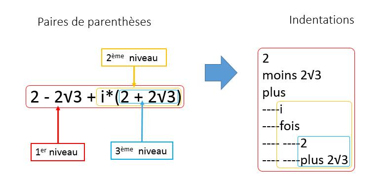
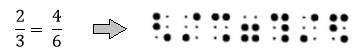
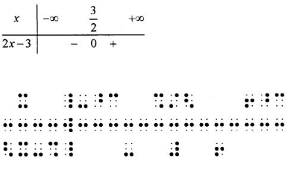
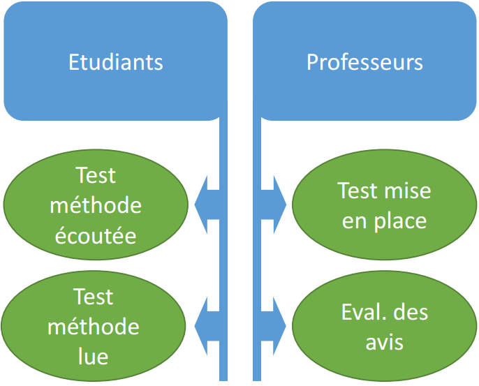
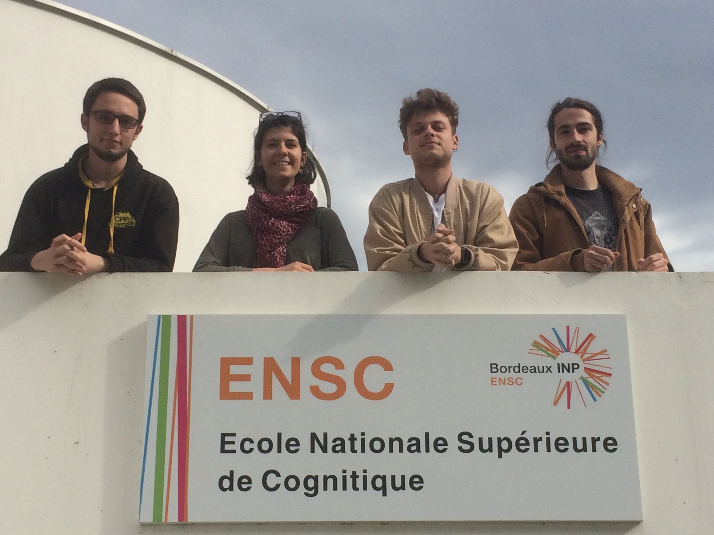

On compte aujourd’hui en France plus de 16 000 jeunes en situation de handicap poursuivant des études supérieures. Beaucoup d’entre eux, et en particulier les non et mal voyants, son contraints de s’orienter vers des filières courtes à cause du manque de dispositifs adaptés.
Ce projet nous a été proposé par notre client François Demontoux, enseignant à l'université de Bordeaux. Ce dernier participe activement à des projets répondant à la problématique de l'accessibilité de l'enseignement pour les étudiants en situation de handicap.
Il nous a été demandé d'identifier le besoin de personnes non voyantes, ainsi que des enseignants, afin de présenter une méthodologie efficace permettant de décomposer des formules mathématiques complexes.
De ce fait, ce projet se situe dans un contexte d'accessibilité à l'éducation pour tous, et d'égalité des chances.
Ce site présente la méthodologie que nous avons élaboré, à destination des enseignants souhaitant rendre leurs cours accessibles aux non voyants.
Le plan vert allie développement durable et enseignement supérieur.
Notre projet permettant d'appliquer une loi relative à l'égalité des chances dans l'enseignement, celui-ci s'incrit répond totalement aux objectifs du plan vert.
De plus, nos perspectives portent sur l'utilisation du lecteur NVDA, qui est un logiciel libre. Cela permet une promotion des logiciels libres, qui ont l'avantage d'être gratuits et modifiables par tout le monde. Cela permet aussi de rompre avec les démarches commerciales des lecteurs d'écrans payants, qui s'avèrent extrêmement contraignantes pour les personnes non-voyantes qui les utilisent.
La méthodologie que nous avons développé permet de décrire une formule mathématique afin de la rendre lisible et facile à manipuler pour une personne non-voyante.
Téléchargement guide méthodologique
Le but est d'améliorer la compréhension des formules mathématiques grâce à un système d’indentations.
Grâce au système d’indentation, la personne peut se rendre compte de la profondeur de la formule, et concentrer son travail sur un bloc plutôt qu’un autre. Voici un exemple d’utilisation de la méthode :

Nous souhaitons remercier l’antenne d’Aquitaine de l’organisme GIAA pour son aide précieuse et ses renseignements au cours de ce projet.
On compte aujourd’hui en France plus de 16 000 jeunes en situation de handicap poursuivant des études supérieures. Beaucoup d’entre eux, et en particulier les non et mal voyants, son contraints de s’orienter vers des filières courtes à cause du manque de dispositifs adaptés dès le collège ou le lycée.
Dans le contexte d’un projet de groupe de première année d’école d’ingénieur, quatre étudiants de l’ENSC de Bordeaux ont élaboré une méthodologie permettant de décomposer les formules mathématiques complexes, pour les rendre plus accessibles.
Voir notre cahier des charges
Cette méthode peut être utilisée par les professeurs souhaitant rendre leurs cours accessibles. Les étudiants pourront ainsi comprendre et manipuler les formules mathématiques via un lecteur d’écran, ou documents braille.
Nous avons commencé notre projet par une recherche de l’existant. Les outils à disposition des personnes mal-voyantes les plus utilisés sont :
Le braille se présente comme un alphabet de points en relief. On le lit en parcourant du doigt un texte, ligne par ligne. Chaque caractère est constitué de 6 points, présentés en 2 colonnes de 3 points. Il existe donc 63 combinaisons différentes.
Les mathématiques telles que nous les connaissons présentent un vaste nombre de signes et de symboles. En plus des différents chiffres, il faut également prendre en compte les opérateurs arithmétiques, les symboles d’inégalité, les lettres grecques, les inconnues au sein des équations, les parenthèses, etc.Il est impossible de retranscrire tous ces symboles à l’aide de seulement 63 combinaisons, c’est pourquoi certains symboles sont représentés en braille mathématique par la combinaison de 2 ou 3 caractères braille.
Le braille mathématique a pour spécificité de linéariser les formules mathématiques,qui sont toujours présentées « en ligne », quel que soit le nombre d’étages que présente la formule initiale. Par exemple, un exemple d'une linéarisation d'une simple équation : .
Cette linéarisation implique un ajout de beaucoup de parenthèses, ce qui les des formules mathématiques plus difficiles à lire, et à manipuler
C’est un dispositif permettant d’afficher des caractères braille parcourus sur une page web. Il peut être très utile pour lire des textes, mais dans le cas de formules mathématiques son utilisation est très difficile.
La linéarisation des formules en braille les rallonge considérablement, et elles ne peuvent ainsi plus rentrer dans le nombre de caractères autorisés par le plage braille. Dans d’autres cas, le braille mathématique nécessite un affichage en deux dimensions, comme pour les tableaux de signes. Ils deviennent ainsi illisibles sur cette technologie.
Plus adaptés à l’ère du numérique, les lecteurs d’écrans sont des logiciels intégrés à l’ordinateur qui “transcrivent oralement” un document. Les deux plus courant sont Jaws et NVDA.
Jaws fonctionne sous Windows. Il coûte 1600€ à l’achat, mais ce prix peut être “soulagé” par des aides, notamment la PCH (Prestation de Compensation du Handicap) délivré par la MDPH (Maison Départementale des Personnes Handicapées). Cet argent provient des amendes que doivent payer les entreprises ne respectant pas leur quota de personnes handicapées.
NVDA, logiciel plus récent, fonctionne sous Linux mais, contrairement à Jaws, est gratuit. Il est tout aussi efficace que Jaws, et il est en open source.
Ces lecteurs d’écrans sont très performants pour lire du texte. Mais comment lire une formule mathématique ? Une image ?
On comprend l’importance de légender les images (ou pour les programmeurs web, de décrire l’image dans l’attribut alt de la balise img comme suit : ‹img src=”lien” alt=”description”> ).
Pour que le lecteur d’écran puisse lire la formule mathématique, il faut la décrire en français le plus clairement possible. C’est justement pour cette description que nous proposons une méthode.
Nous avons au cours de ce projet recueilli le témoignage d’un étudiant mal-voyant, rencontré des personnes non-voyantes de l’organisme GIAA et effectué un sondage sur plus de 35 professeurs. De ces rencontres nous avons compris qu’il est très difficile pour un étudiant en situation de handicap visuel d’avoir accès aux enseignements scientifiques de niveau supérieur, d’une part parce que les enseignants n’y sont, pour certains, pas sensibilisés, et d’autre part par manque de méthode. Par notre projet nous voulons sensibiliser les professeurs tout en leur proposant une méthode pratique et compréhensible de décomposition de formules.
Voici les résultats d'un sondage que nous avons éffectué sur des professeurs.
Nous avons mis en place des tests afin de vérifier si cette méthode répond à nos attentes, et pouvoir la corriger. Ces tests portent sur deux dimensions importantes :
Étudiants : la compréhension des formules mathématiques par les étudiants non voyants doit être meilleure avec notre méthode qu’avec les méthodes classiques
Professeurs : les professeurs doivent pouvoir appliquer simplement notre méthode, sans réaliser d’erreurs et sans que cela leur soit trop contraignant
Voici le plan de tests que nous avons établi, ainsi que les ressources nécessaires :
plan de tests ressourcesNous espérons que ce projet sera repris par la suite, et diffusé à un public large. L’accès aux mathématiques ne doit pas être réservé qu’à certains, et nous souhaitons à travers notre démarche sensibiliser les professeurs de tous les niveaux. Si ce projet vous intéresse ou si vous avez besoin de renseignements, n’hésitez pas à nous contacter dans la rubrique “A propos”.
| Cahier des charges |
| État de l'art |
| Guide méthodologique |
| Plan de tests |
| Ressources des tests |
Visiomaths est un projet lancé en 2016 par quatre étudiants de l’ENSC, école nationale supérieure de cognitique de Bordeaux, en collaboration avec François Demontoux, enseignant à l’université de Bordeaux.
Nous proposons une méthode de décomposition de formules mathématiques complexes, afin de les rendre accessibles aux étudiants non et mal voyants.
visiomaths@ensc.fr